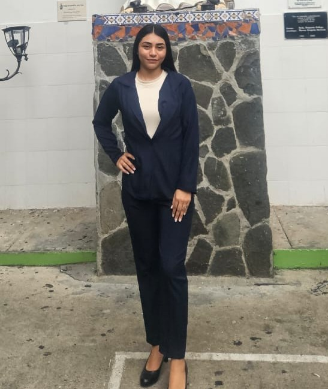

Lia Reyes
Soy estudiante de Desarrollo Web y me apasiona crear páginas que se vean bien y sean fáciles de usar. Estoy aprendiendo HTML, CSS y Git, y disfruto resolver problemas paso a paso. Mi objetivo es convertirme en desarrolladora web profesional.